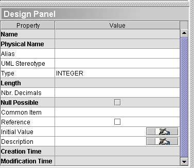

Using
the design panel
Subtitle
The design panel refers to the design tab of a properties window. To
display it, in the main menu, choose
Display / Show design panel. You will see a large window
appearing at the bottom
of your screen.
This useful tool enables you to quickly display and edit the properties
of any semantic
object . With this tool you may work on a single or multiple selection
at the same
time. If you select more than one object, only the common properties
and the common values will be displayed.
Of these common properties, the white ones refer to common values and
gray ones refer to different values.
Gray properties:
Name, Physical Name, Length, Null Possible ...
have different values.
White properties:
Alias, UML Stereotype, Type, Nbr. Decimals, Common Item ... all have
common
values.

Be careful, changes are instantaneous on the design panel. You do
not
need to click Apply to validate the changes.